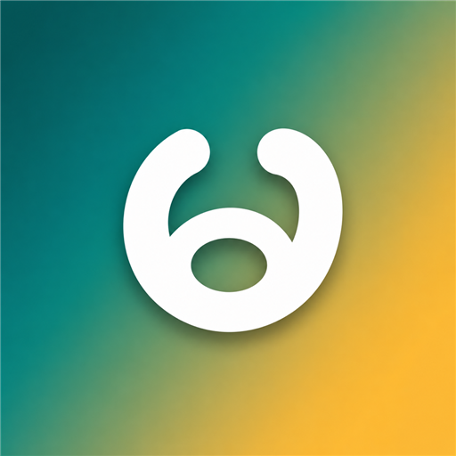

မြန်မာ KeyboardPhonetic Burmese for WindowsA phonetic (Romanized) Myanmar keyboard. Type mrnmaa and get မြန်မာ — in any app, with word suggestions and no special layout to memorize.
This box uses the same rules as the keyboard. The real keyboard also suggests whole words as you type.
Built to feel natural for anyone who already types in English.
Spell Burmese words in English letters and they turn into Myanmar script as you type.
Types directly into any app — Word, browsers, Facebook, chat and email.
A word list helps you pick the right spelling, and learns the words you use most.
Always real Myanmar Unicode — never Zawgyi — so your text shows correctly everywhere.
See every letter, vowel sign, medial and tone mark — and click to insert it.
Optional emoji beside matching words, plus animated emoji and sticker palettes.
Runs fully on your PC. No keystrokes, usage data or personal information are sent anywhere.
Every feature unlocked for everyone. No ads, no account, no reminders.
A few simple rules cover almost everything. Type any of these in the box above to see them work.
Every consonant has a fixed key; a trailing h makes it aspirated.
One letter is the short vowel, two letters the long one.
y r w h straight after a consonant become ျ ြ ွ ှ.
A consonant that ends a syllable gets ် automatically.
. → ့ · : or x → း · q or M → ံ · _ stacks the next letter
T Th D Dh N L → ဋ ဌ ဍ ဎ ဏ ဠ · / → ၊ · // → ။
Install, then press Win + Space to switch to the Myanmar keyboard.
Something not working? Report it on GitHub.
The things people ask most.
Yes. Every feature works for everyone, with no ads, no account and no reminders. If you want to say thanks you can buy me a coffee — it changes nothing in the app.
No. The conversion and the word suggestions run on your PC. The app checks GitHub for a newer version once a day; that only asks for the latest version number, and you can turn it off in the app.
Always standard Myanmar Unicode, so it displays correctly on modern phones, browsers and Office.
That is SmartScreen showing a warning for a new download from a small independent developer. Click More info → Run anyway.
Burmese is written without spaces between words, so the keyboard never adds one by itself. While you type a word, Space picks a suggestion and Enter commits it; when nothing is being typed, Space types a normal space.
Yes — they're separate keyboards and can be installed side by side.
This isn't a product with a paywall. It's a small tool so anyone can write Burmese on their PC.